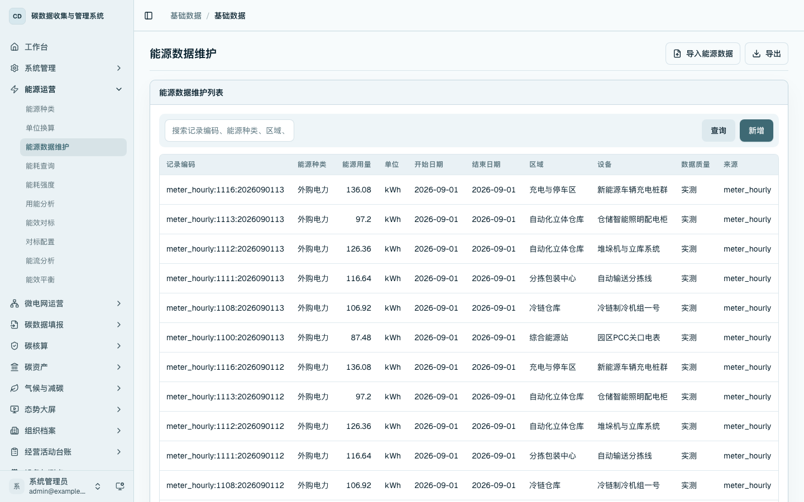
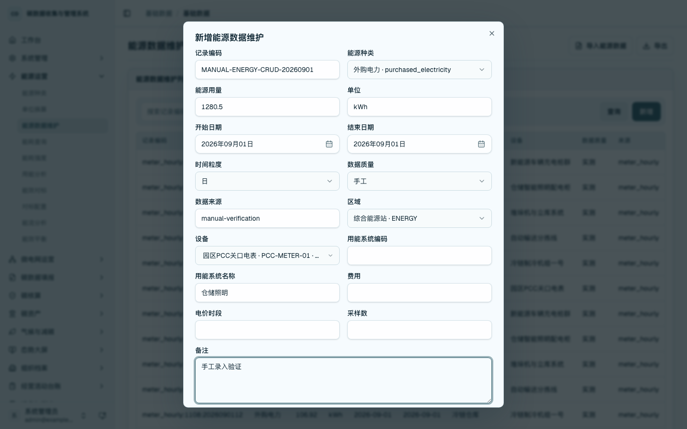
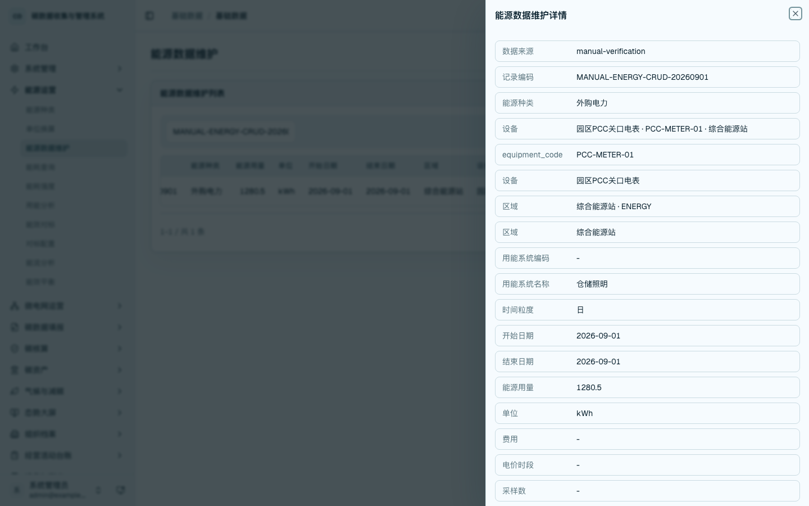
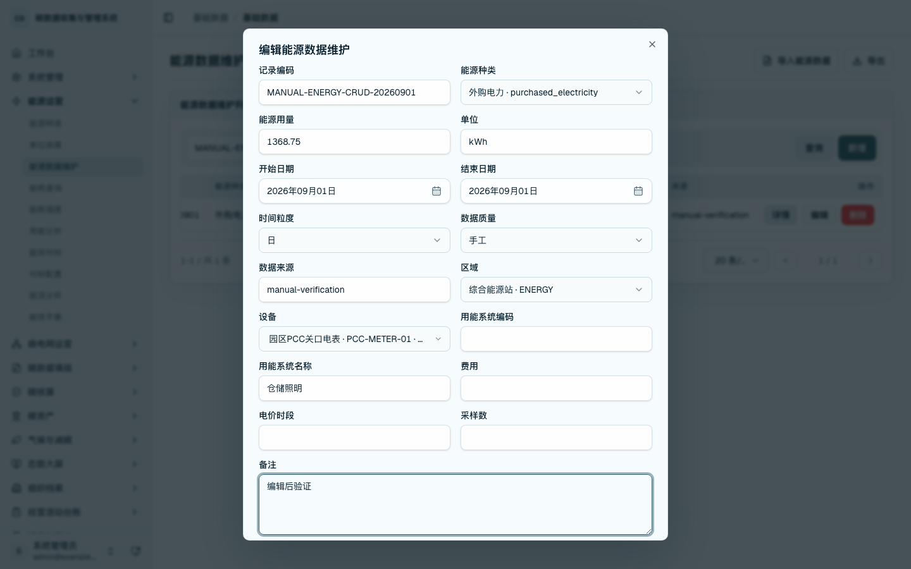
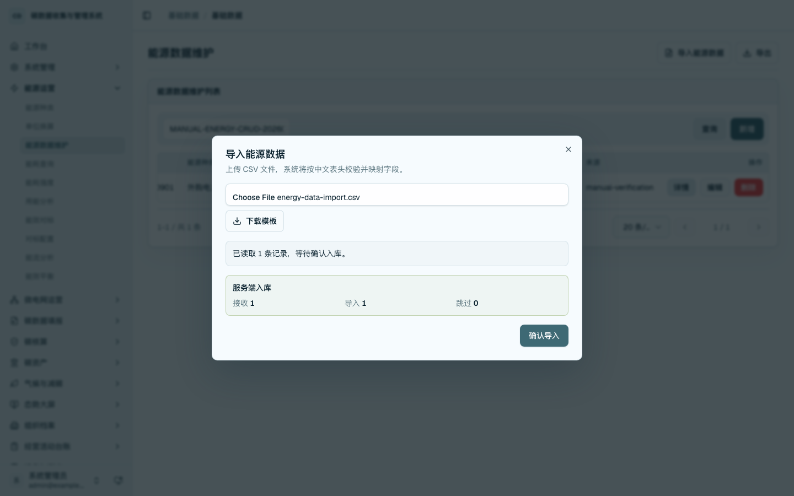
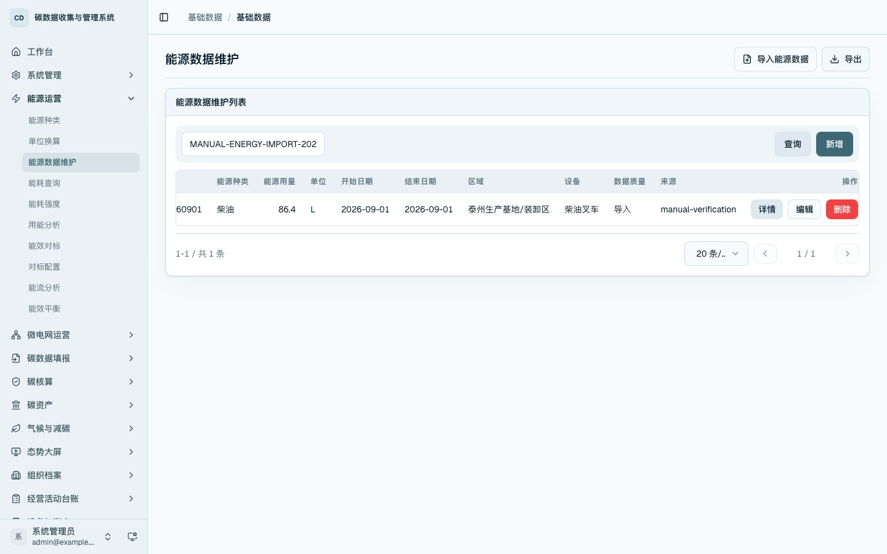
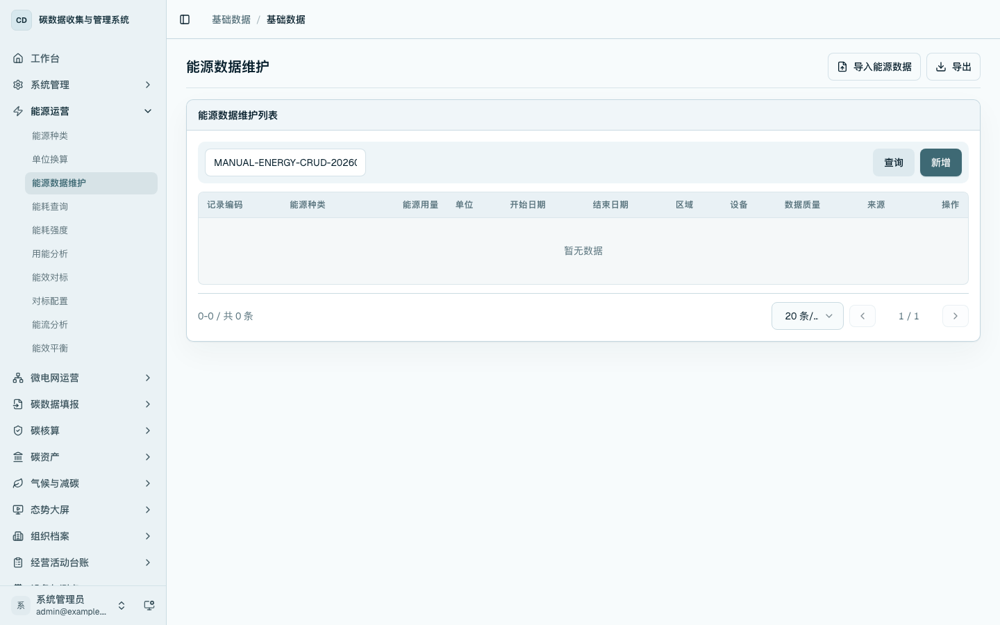

能源事实数据维护
本章用于维护已经形成账期的能源消费事实数据。该页面承接人工抄表、能源账单、现场补录和整理后的 CSV 导入数据，形成统一的能源事实列表，供能耗查询、能源强度、用能分析和预算管理使用。
能源事实数据维护只处理“某一账期、某一能源种类、某一区域或设备实际消耗了多少能源”。能源种类和单位换算在“能源主数据维护”章节维护；设备、区域、测点和 MQTT 接入在“区域、设备与 MQTT 电表接入配置”章节维护；作业量、面积、产量、产值等分母数据不在本章处理。
菜单位置
- 从左侧侧边栏进入「能源运营 / 能源数据维护」，打开
/data/energy-consumption，维护账期能源事实数据。 - 也可从
/platform的「能源运营」分组进入能源数据维护页面，适合集中完成导入、补录和导出。 - 能耗查询、能耗强度、用能分析和能流分析位于「能源运营」同一一级菜单下，但这些页面用于查看结果，不承担原始能源事实数据维护。
本章是能源数据录入主入口。用户完成能源种类、单位换算、区域和设备配置后，应在本页完成手工新增、CSV 导入、详情核对、编辑、导出和删除，再进入查询分析页面查看汇总结果。
列表查询
进入 /data/energy-consumption，查看能源数据维护列表。列表展示记录编码、能源种类、能源用量、单位、开始日期、结束日期、区域、设备、数据质量和来源。可按记录编码、能源种类、区域或设备查询，核对当前生产基地已有能源事实数据。

新增能源事实
点击「新增」，填写记录编码、能源种类、能源用量、单位、开始日期和结束日期。能源种类通过选择器从能源主数据读取，选择能源种类后系统自动带出默认单位。
继续选择时间粒度、数据质量、数据来源、区域、设备和用能系统。区域通过区域主数据选择，设备通过设备台账选择；选择设备后，系统会带出设备挂载的区域，减少手工输入造成的错配。

查看保存结果
保存后按记录编码查询，在结果行点击「详情」。详情抽屉展示能源种类、用量、周期、区域、设备、用能系统、数据质量、来源和备注，用于确认新增记录已经按业务字段完整入库。

编辑能源事实
在查询结果行点击「编辑」，系统打开编辑表单并回填原记录字段。可调整能源用量、账期、数据质量、区域、设备、用能系统、费用、采样数和备注。保存后重新按记录编码查询，列表和详情应显示更新后的字段。

编辑后回显
编辑保存后再次打开详情，核对能源用量、备注和归集字段是否已经更新。该回显用于确认编辑动作不是只停留在前端表单，而是已经写入后端并能重新读取。
CSV 导入
点击「导入能源数据」，上传 CSV 文件。文件应包含记录编码、能源种类编码、开始时间、结束时间、能源用量、单位、数据来源、设备、区域、用能系统和数据质量等字段。系统读取文件后显示记录数量，点击「确认导入」后显示接收、导入和跳过数量。导入完成后可按记录编码查询导入记录。

CSV 导出
点击「导出」，系统按当前租户导出能源数据 CSV 文件。导出文件用于能源台账留存、复核和后续数据处理。

删除能源事实
对手工验证或误录入的能源事实记录，可在列表操作列点击「删除」。删除后按记录编码查询，列表不再显示该记录。

本章检查项
- 能源事实数据支持查询、新增、详情、编辑、导入、导出和删除。
- 新增和导入后的记录可按记录编码查询回读。
- 编辑后的记录可在列表和详情中回显。
- 能源种类、区域和设备通过选择器维护，不再要求用户手工输入编码。
- 删除动作应只用于手工验证、误录入或允许清理的数据；基础演示数据不应随意删除。